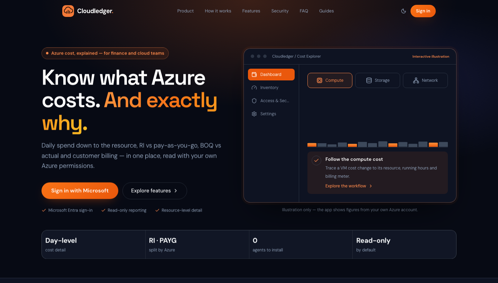
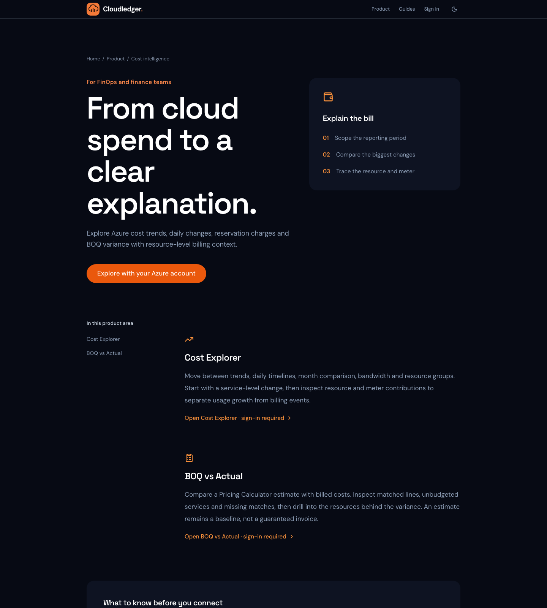
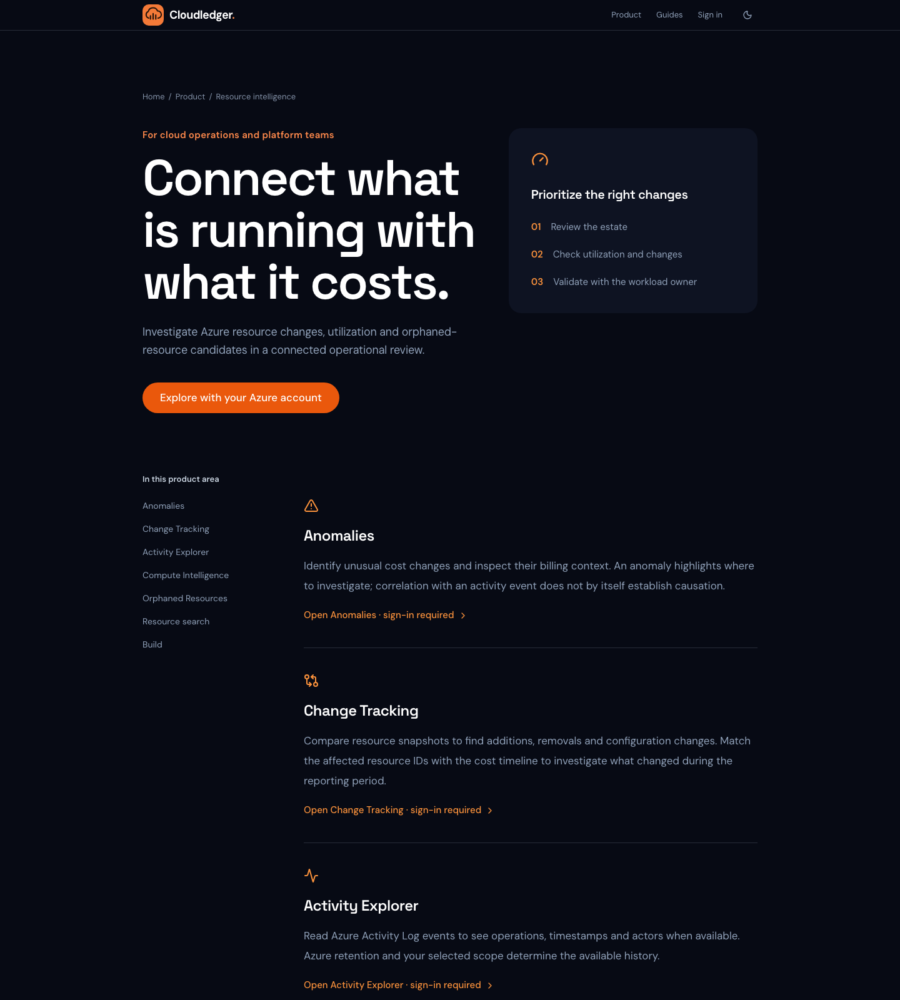
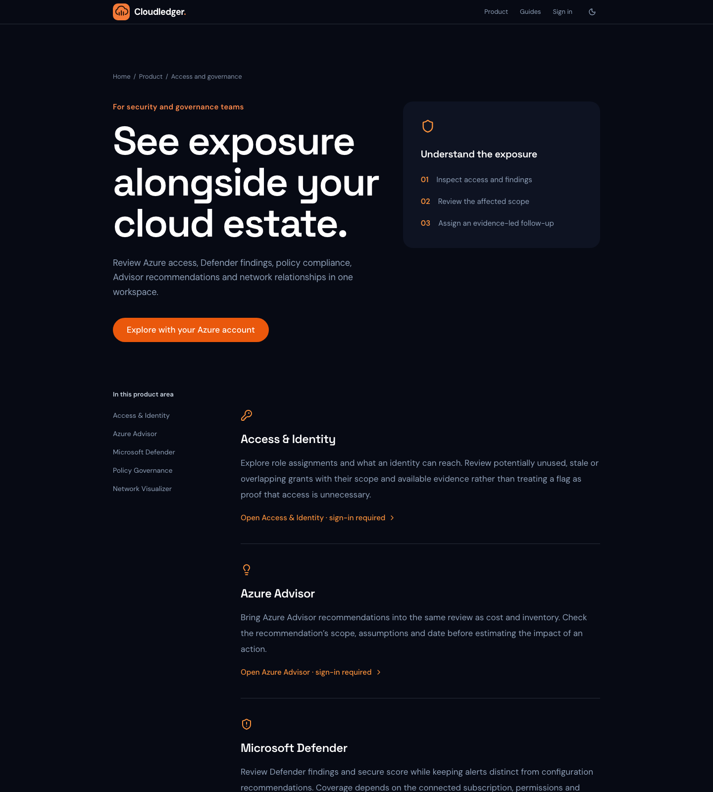
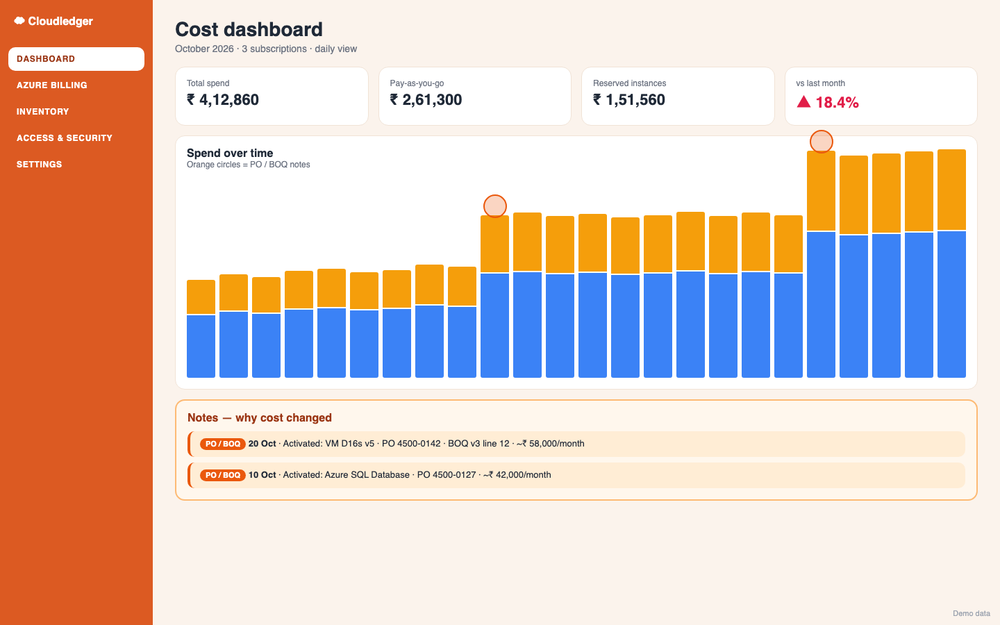
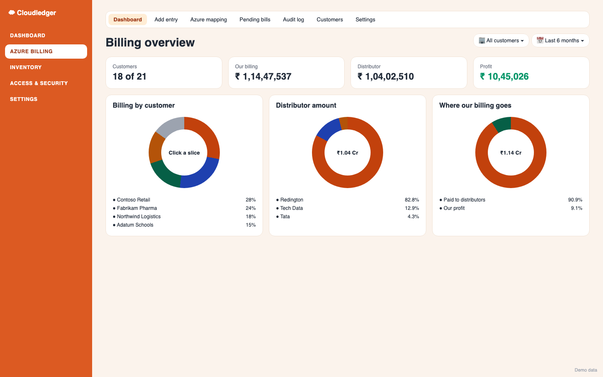
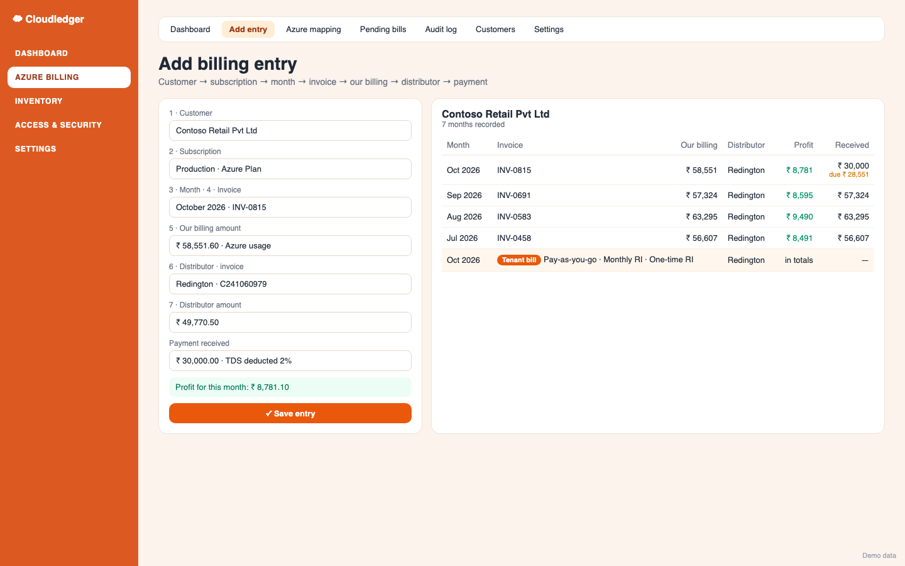
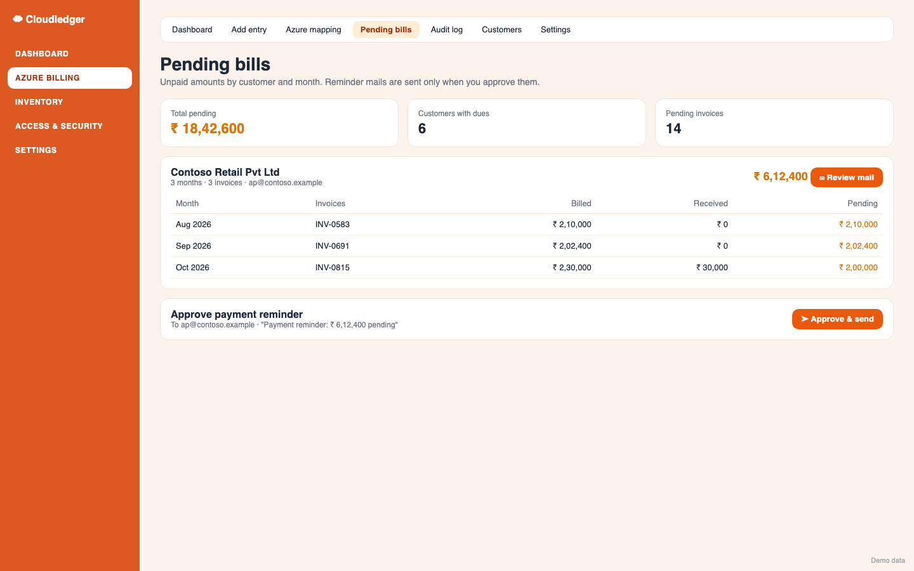
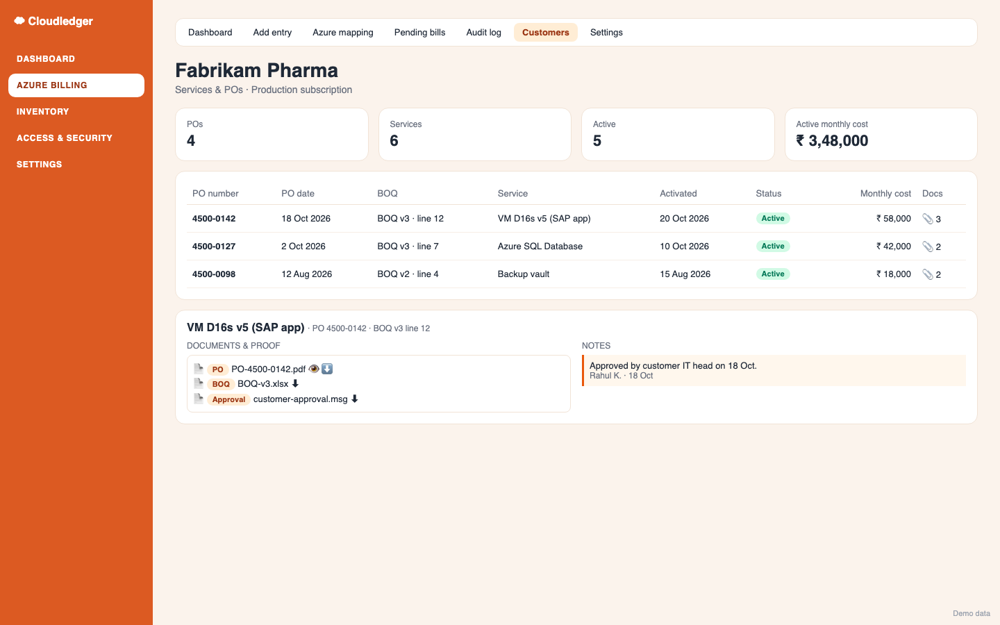
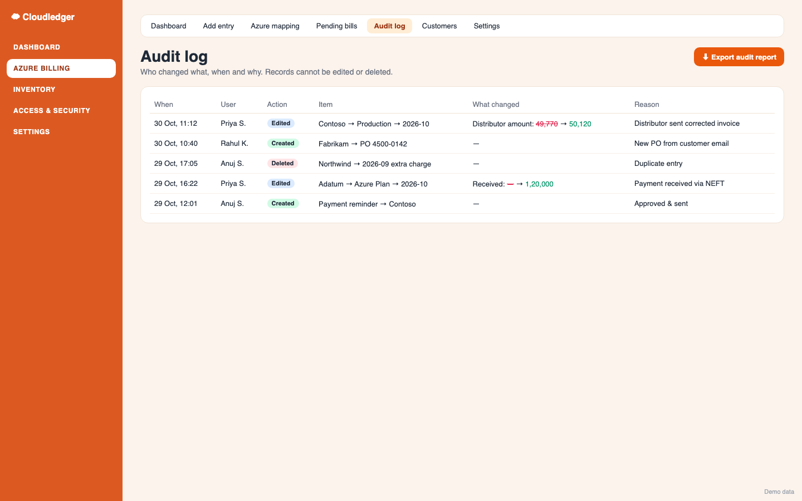

Know what Azure costs. And exactly why.
Cloudledger is an open-source Azure cost management app built by Anuj Singh (anuj7052) . Daily spend down to the resource, RI vs pay-as-you-go, BOQ vs actual and customer billing — in one place, read with your own Azure permissions.
Open the live app ⭐ Star on GitHub

Features
Azure cost dashboard — daily and monthly spend, highlighted notes explaining every changeCost Explorer — service → resource group → resource → meterBOQ vs actual — planned vs real Azure costAzure Billing CRM for CSP partners — customers, subscriptions, invoices, distributors, profit, POs and BOQsPending bills & approved reminder mails , audit log with who/what/when/whyMicrosoft Entra sign-in, read-only by default



Inside the app (demo data)

Cost dashboard — daily spend, RI vs PAYG, highlighted PO/BOQ notes 
Billing overview — billing, distributor, profit; click any chart 
Add entry — invoice, distributor invoice, payment received, tenant bills 
Pending bills — month-wise dues, reminder mail after approval 
Services & POs — PO, BOQ, activation date, proof documents, notes 
Audit log — who changed what, when and why; CSV report
Tech stack Python FastAPI · React · Vite · Tailwind CSS · Azure (App Service, PostgreSQL, Blob Storage, Communication Services, OpenAI) · Microsoft Entra ID.